Представители уральской социологии
- 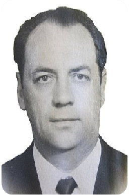
ЛЕОНИД МИХАЙЛОВИЧ АРХАНГЕЛЬСКИЙ
Cоветский учёный-философ и педагог, доктор философских наук(1963), профессор(1966), Член Президиума Философского общества СССР. (1925—1982)
Родился 23 сентября 1925 года в городе Хилок Читинского уезда (ныне — Читинская область).
С 1945 по 1950 годы проходил обучение на историко-филологическом факультете Уральского государственного университета. С 1950 по 1953 годы обучался в аспирантуре по кафедре философии Уральского государственного университета. Будучи аспирантом кафедры принимал активное участие в проведении первых послевоенных социологических исследований на промышленных предприятиях Свердловской области. ( см. Коган Л.Н. Неповторимая романтика социологии//Российская социология шестидесятых годов в воспоминаниях и документах.- СПб.: Русский христианский гуманитарный институт, 1999- С. 289)
С 1953 года на педагогической работе в Уральском государственном университете: с 1965—заведующий кафедрой этики и эстетики, с 1966 по 1972 годы— заведующий кафедрой исторического материализма.
В конце 1950-х 1960-е годы принимает участие в изучении эмпирических проблем на промышленных предприятиях наряду с другими заведующими кафедрами общественных наук, такими как Л.Н.Коган, Ю.Е.Волков, О.Н.Жеманов, Г.В.Мокроносов, В.Г.Нестеров, профессорами и доцентами вузов города.
С 1972 по 1976 годы—декан философского факультета Уральского государственного университета. С 1976 по 1982 годы— заведующий сектором этики Института философии АН СССР
В 1953 году защитил диссертацию на соискание учёной степени—кандидат философских наук, в 1963 году—доктора философских наук по теме: «Категории марксистской этики».
Помимо основной деятельности занимался и общественной работой: был председателем бюро секции этики и членом Президиума Философского общества СССР, председателем бюро Уральского отделения Философского общества СССР, председателем Учёного Совета по защите диссертаций по философским наукам при Уральском университете, руководителем лекторской группы при Ленинском районном комитете КПСС по философии и научному коммунизму, членом экспертной комиссии ВАК СССР, членом редакционной коллегии журнала «Философские науки», ученым секретарём секции по проблемам правового и нравственного воспитания молодежи Общественного совета по координации научных исследований коммунистического воспитания молодежи при ЦК ВЛКСМ и АПН СССР. С 1978 по 1981 годы был ведущим телевизионной программы «Этика».
Научные интересы: теоретические и практические вопросы этики, социально-этические проблемы теории личности, проблемы нравственноговоспитания.
Некоторые научные труды
1. Марксистская этика: предмет, структура, основные направления. М.: Мысль, 1985. 237 с.
2. Этическая тема в современной советской художественной литературе. М.: Знание, 1980. 64 с. (Соавтор Н.А.Архангельская).
3. Ценностные ориентации и нравственное развитие личности. М.: Знание, 1978. 64 с.
4. Марксистско-ленинская этика как система. М.: Знание, 1976. 64 с.
5. Социально-этические проблемы теории личности. М.: Мысль, 1974. 218 с. (12 а.л.).
6. Курс лекций по марксистско-ленинской этике. М.: Высшая школа, 1974. 317 с.(18 а.л.).
7. Нравственные идеалы молодежи. М.: Знание, 1970. 16 с. (1,0 а.л.).
8. Лекции по марксистско-ленинской этике. Свердловск: [б. и.], 1969. 132 с.(8,9 а.л.).
- 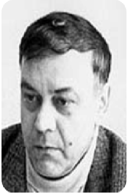
БОРИС БОРИСОВИЧ БАГИРОВ
Первый декан факультета (департамента) политологии и социологии, кандидат философских наук, доцент, почетный работник высшего профессионального образования РФ.
Родился 24 февраля 1949 г. в г. Свердловске. В 1967 г. поступил, в 1972 г. окончил философский факультет Уральского университета.
С 1972 по 1976 г. работал преподавателем в Уральском политехническом институте. В 1976–1979 гг. – аспирант Уральского университета. В декабре 1979 г. защитил кандидатскую диссертацию по проблемам политической культуры. С декабря 1979 г. по февраль 1984 г. – ассистент, старший преподаватель кафедры теории научного коммунизма и социологии философского факультета Уральского университета. С февраля 1984 по апрель 1990 г. – доцент кафедры социально-политических наук. С мая 1990 г. – заведующий кафедрой социально-политических наук. Основные учебные курсы, которые вел Б.Б.Багиров: «Введение в политическую теорию», «Политическая система России», «Избирательная система России».
С октября 1990 по август 1994 г. – является деканом философского факультета.
С именем Б.Б. Багирова связано становление в 1994 году и развитие факультета политологии и социологии, которым он руководил в течение 15 лет (до 2009 года). Он проявил себя настоящим профессионалом в деле обучения и воспитания будущих политологов и социологов, став подлинным лидером для преподавателей и студентов факультета. За годы его руководства факультетом было сформировано четыре кафедры, открыта подготовка учащихся по направлению «социальная работа», получила развитие лаборатория социологических и политологических исследований. Свидетельством авторитета вновь созданного факультета стало принятие его в члены Международного союза историков рабочего и других социальных движений (1997), Европейского консорциума по политическим исследованиям (1999), содружества институтов и учебных заведений, осуществляющих подготовку специалистов по государственному и общественному управлению в странах Центральной и Восточной Европы (1999).
Неоценим и его личный организационный и преподавательский
вклад в создание филиала УрГУ в городе Ноябрьске (ЯНАО), где на Тюменском
Севере подготовлено более 400 специалистов в области политического менеджмента и управления.
Преподавание и активную общественную работу Б. Б. Багиров неизменно совмещал с исследовательской деятельностью. Он стал автором более 40 научных
работ, неоднократно выступал на авторитетных конференциях и международных
форумах.
Награжден нагрудным знаком «Почетный работник высшего профессионального образования Российской Федерации» (2002).
Ушел из жизни после тяжелой и продолжительной болезни.
Некоторые научные труды
1. Багиров Б. Б., Карыпкулов А. К., Коган Л. Н. Политическая культура социализма, 1984. - 467 с.
2. Багиров Б. Б., Генин Л. В., Попов В. Г. и др. Молодежь в условиях российских реформ: эволюция экономических, политических и духовных ориентаций. Екатеринбург, УрГУ, 1993. - 122 с.
3. Багиров Б. Б. Комитет Севера: сравнительный анализ деятельности. Екатеринбург, 1996
4. Багиров Б.Б., Ковалева М.М. Журналистика и политика, 2001. Эл. Ресурс.
- 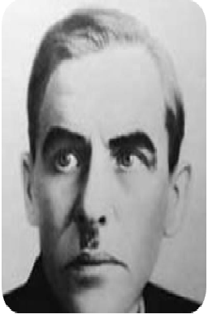
ВЛАДИМИР ИВАНОВИЧ ВЕЛИЧКИН
Советский учёный-гигиенист, организатор здравоохранения на Урале, доктор медицинских наук, профессор. Автор более 80 научных работ, посвященных различным социально-гигиеническим вопросам.
Родился 30 мая (11 июня по новому стилю) 1890 в городе Болхов Орловской губернии в семье служащего.
В 1915 году окончил Московский университет. .
В марте 1927 года приказом Наркомздрава РСФСР Величкин был направлен на Урал. Был в числе из инициаторов открытия в Свердловске медицинских учреждений — гигиены труда и профзаболеваний, курортологии и физиотерапии, кожно-венерологических, санитарно-гигиенических. В 1931—1932 годах находился в научной командировке в Берлине. .
В 1934-1935 году, будучи зав. кафедрой социальной гигиены Свердловского мединститута, осуществляет первое крупное монографическое исследование труда и быта промышленных рабочих. По итогам исследования в 1936 г. была выпущена книга «Производственные и бытовые условия рабочих Верх-Исетского металлургического завода. Опыт социально-гигиенической характеристики».
Действительное содержание книги шире его заголовка. Величкин на материале одного предприятия провел интересное сравнение условий труда и быта, образования и культуры, медицинского обеспечения и состояния здоровья уральских рабочих до революции и в середине 1930-х годов. Автором детально изучены заводская статистика, литературные источники и воспоминания рабочих, а также предпринят анкетный опрос всех рабочих завода рождения 1900 г. и старше, которые еще хорошо помнили условия труда на дореволюционных предприятиях. Из них отобрали 201 человека, которые до революции трудились на металлургических заводах Урала. Все они выступили респондентами исследования.Кроме того, было проанкетированы 274 рабочих, имевших 5-й и выше
производственные разряды. Таким образом, в выборке оказались 475 рабочих завода.
Выборка составила 12% генеральной совокупности всех рабочих завода и является
вполне репрезентативной.
Анкетному обследованию подверглись и семьи всех этих рабочих. В ноябре-декабре 1935 г. исследование было повторено: было опрошено 309 семей («панельное исследование»).
О значении работы В.И. Величкина для развития социологии на Урале:
«Наряду с заводской статистикой, воспоминаниями кадровых рабочих, трудившихся до революции и во время исследования, был использован также метод анкетного опроса рабочих завода. Выборка исследования составила 12% генеральной совокупности рабочих завода.
Выполненная в 30-е годы работа показалась специалистам послевоенного периода развития социологии в Свердловске настолько впечатляющей, что в конце 1970-х сектором демографии и уровня жизни Института экономики Уральского отделения АН СССР было проведено панельное исследование на том же заводе».
(Зборовский Г.Е. Социология в Свердловске/Екатеринбурге:
второе рождение и этапы развития. С.153.)
https://cyberleninka.ru/article/n/sotsiologiya-v-sverdlovske-ekaterinburge-vtoroe-rozhdenie-i-etapy-razvitiya/viewer
«Ни я, ни Иовчук, откровенно говоря, не имели понятия о методике и технике социологических исследования. Никакой литературы по социологии в Екатеринбурге не было. К счастью, я нашёл изъятую в свое время, но сохранённую моим отцом книгу его коллеги В. И. Величкина «Производственные и бытовые условия рабочих Верх-Исетского металлургического завода», изданную маленьким тиражом в Свердловске в 1936 году. Эта, к сожалению, забытая ныне монография заслуживает того, чтобы войти в историю российской социологии. Крупный организатор здравоохранения на Урале врач-гигиенист В. И. Величкин провел сплошной анкетный опрос рабочих сравнительно небольшого завода. Результаты вызвали резкое недовольство руководства предприятия, городских и областных партийных органов. Например, оказалось что 40,8% кадровых рабочих вообще не учились в школе, 7,5% – проучились год, 15,9% – 2 года, 30% детей рабочих не посещали школу, только 20% заводчан имели возможность слушать радио и т д. Автор называл свою работу санитарно-гигиеническим исследованием, но на самом деле она освещала все стороны жизни предприятия и сразу же была строжайшая запрещена, упоминать ее было невозможно, а почти весь тираж уничтожен. Эта книга стала для меня первым учебником социологии».
(Коган Л.Н. Неповторимая романтика социологии//
Российская социология шестидесятых годов в воспоминаниях и документах.-
СПб.: Русский христианский гуманитарный институт, 1999- С. 285)
В 1941—1947 годах являлся директором Свердловского медицинского института и первым деканом санитарно-гигиенического факультета (с 1943 года). В 1939—1952 годах был председателем Свердловского отделения Всесоюзного гигиенического общества. В 1947 году защитил докторскую диссертацию на тему «Состояние здоровья населения Свердловска по данным обращаемости».
Работа Свердловского медицинского института в годы Великой Отечественной войны получила высокую оценку Министерства здравоохранения РСФСР, а директор института Владимир Иванович Величкин за свой труд был награждён Орденом Ленина.
Основные направления научной работы В. И. Величкина — проблемы социальной гигиены на Урале. Был награждён орденами Ленина и «Знак Почёта», а также медалями. Лауреат Сталинской премии.
Умер 30 января 1953 года в Свердловске.
- 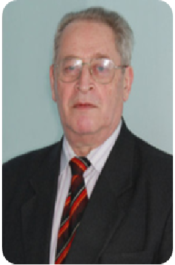
ЮРИЙ РУДОЛЬФОВИЧ ВИШНЕВСКИЙ
Заслуженный деятель российского общества социологов, доктор философских наук, почетный профессор УрФУ, Лауреат премии Правительства Российской Федерации в области образования 5 марта 1938 г., Одесса, Украинская ССР, СССР
Вишневский Юрий Рудольфович – возглавляет Уральскую школу социологии молодежи.
В 1960 году окончил историко-филологический факультет Благовещенского государственного педагогического института имени М. И. Калинина.
В 1960—1963 годы работал учителем истории и обществоведения в школе рабочей молодёжи в Нижнем Тагиле.
В 1963—1982 годы преподавал марксистско-ленинскую философию в Нижнетагильском государственном педагогическом институте.
В середине 1960-х гг. инициировал проведение в Нижнем Тагиле социологических исследований, направленных на выявление основных тенденций развития культурного уровня рабочей молодежи Урала. Они получили обобщение в кандидатской диссертации, защищенной Вишневским Ю.Р. в 1968 году. в Уральском государственном университете им. А. М.Горького.
В 1970-х Вишневский Ю.Р. совместно с Л.Н.Коганом руководил рядом региональных исследований по различным аспектам социологии культуры молодежи, участвовал в разработке планов социального развития крупнейших предприятий Урала: Уралвагонзавода, Нижнетагильского металлургического комбината и др. Руководил разработкой первого в стране плана культурного развития микрорайона (Нижний Тагил). Юрий Рудольфович одним из первых обосновал необходимость выделения специального раздела «Молодежь» в планах социального и культурного развития.
С 1976—1981 годы Ю.Р.Вишневский - декан художественно-графического факультета в Нижнетагильском государственном педагогическом институте.
В 1981 году защитил диссертацию на соискание учёной степени доктора философских наук.
С 1982 года и по настоящее время Вишневский Ю. Р. работает в УПИ-УРФУ, является заведующим кафедрой социологии и социальных технологий управления.
Вишневский Ю. Р. — талантливый педагог. Им разработан, и многие годы читается курс лекций по «Социологии» для студентов технических специальностей..
В 2006 году был издан первый в России учебник «Социология молодежи», получивший гриф УМО. В 2012 году за многолетние успехи в области просвещения и образования Вишневский Ю. Р. был признан «Лучшим профессором УрФУ» в номинации социально-экономические дисциплины. Вишневский Ю. Р. является действительным членом Академии гуманитарных наук и международной педагогической академии.
Вишневский Ю. Р. ведет активную организационную и исследовательскую работу по развитию социологии молодежи, образования и культуры.
Под его непосредственным руководством проведено несколько крупных общероссийских исследований проблем молодежи и студенчества. В течение 17 лет Ю. Р. Вишневский руководит проектом мониторинга студентов Свердловской области. В 2016 году сборнику научных статей «Студенчество России о социальном неравенстве и социальной справедливости» присвоено первое место в национальном конкурсе публикаций Российского общества социологов в номинации «Публикации по результатам исследований».
Им опубликовано около 500 научных работ, в том числе 24 монографии. Его работы известны в России и за рубежом, подготовлено 2 доктора наук и 30 кандидатов наук. Многие годы является членом диссертационного Совета при УрГУ/УрФУ, ныне исполняет обязанности заместителя председателя данного Совета.
Юрий Рудольфович в течение 20 лет является Председателем Уральского отделения Российского общества социологов (РОС) и бессменным Председателем организационного комитета «Уральских социологических чтений».
Ю. Р. Вишневский активно участвует в общественной жизни. Много лет являлся экспертом Государственного Совета РФ по молодежной политике, был автором концепций УГТУ-УПИ по гражданскому и патриотическому воспитанию студентов и внеучебной работы в вузе. С 2005 года выполняет обязанности вице-президента РОС.
За большую педагогическую, научную и общественную работу Вишневский Ю. Р. награжден медалью к ордену «За заслуги перед Отечеством II степени» (1977), нагрудным знаком «Отличник Народного просвещения РСФСР» (1977), Премией Правительства РФ в области образования (2005), медалью «За развитие социологического образования в России» и медалью П. А. Сорокина (2009), медалью «Заслуженный деятель российского общества социологов» (2010), медалью «За вклад в развитие местного самоуправления» (2012), медалью «За честь и славу России» (2012).
Профессор Вишневский Ю. Р. является лауреатом Премии Правительства РФ в области образования, обладателем Почетной грамоты Президента РФ (2015 г), неоднократно награждался грамотами Государственного комитета РФ по делам молодежи, грамотой Законодательного собрания Свердловской области, грамотой Губернатора Свердловской области, неоднократно получал благодарственные письма Министерства социальной защиты населения Свердловской области за проведенную исследовательскую работу.
Некоторые научные труды
1. Коган Л. Н., Вишневский Ю. Р. Очерки теории социалистической культуры / Уральск. науч. центр АН СССР. Ин-т экономики. Сектор социологии культуры. — Свердловск: Средне-Уральское книжное издательство, 1972. — 169 с.
2. Вишневский Ю. Р., Нархов Д. Ю. Какое общество является справедливым: мнение свердловских студентов // Социологические исследования. 2017. № 5. С. 35-46. https://www.socis.isras.ru/files/File/2017/2017_5/Vishnevsky.pdf
3. Вишневский Ю. Р., Шапко В. Т. Образование в трансформирующемся обществе: вызовы XXI века // Учёные записки НТГСПА, 2006: сб. статей / Нижнетагил. гос. соц.-пед. акад., М-во образования и науки Рос. Федерации, Федер. агентство по образованию ; ред. В. И. Смирнов. — Нижний Тагил: НТГСПА, 2001. — 81 с. — ISBN 5-8299-0083-1.
- 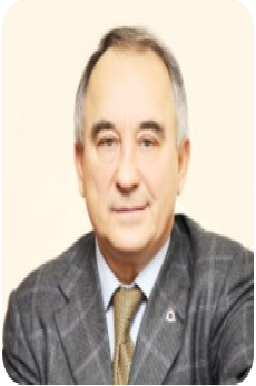
ЮРИЙ ЕВГЕНЬЕВИЧ ВОЛКОВ
Российский социолог, доктор философских наук, член Российской академии естественных наук, профессор Международной академии маркетинга и менеджмента
Родился 21 августа 1929 г. в г. Верхний Уфалей Челябинской области
В 1950 г. окончил Свердловский юридический институт, работал преподавателем, старшим преподавателем, доцентом Свердловского юридического института.
В конце 50-х из юриспруденции пришел в социологию: работал в составе исследовательского коллектива кафедры философии, а затем и социологической лаборатории Уральского государственного университета (см. Коган Л.Н. Неповторимая романтика социологии//Российская социология шестидесятых годов в воспоминаниях и документах.- СПб.: Русский христианский гуманитарный институт, 1999- С. 289, 291-293)
До середины 1960-х принимает активное участие в изучении эмпирических проблем на промышленных предприятиях наряду с заведующими кафедрами общественных наук, такими как А.М.Архангельский, Л.Н.Коган, О.Н.Жеманов, Г.В.Мокроносов, В.Г.Нестеров, профессорами и доцентами вузов города.
1966—1968 гг — заведующий сектором социологии управления народным хозяйством Уральского филиала АН СССР. Основная задача,
сектора состояла в выработке типовых методик социологического изучения управления, составления планов социального развития предприятий и территорий
и проведении соответствующих эмпирических исследований.
1968-1969 гг – преподаватель Свердловской Высшей Партийной Школы.
С 1970 г. — проректор по научной работе, директор научно-исследовательского центра ВКШ при ЦК ВЛКСМ (г. Москва). С 1984 г. — заведующий сектором Института марксизма-ленинизма, заведующий кафедрой социологии и социального управления, декан социологического факультета Академии труда и социальных отношений - основная область научной деятельности — социология, политология, философия. С 1994 года – академик Российской академии естественных наук, академик Международной академии информатизации; академик-секретарь отделения социологии, политологии и экономики секции "Российская энциклопедия"; член редколлегии журналов "Социологические исследования", "Труд и социальные отношения".
Основные направления научно-исследовательской деятельности социальное развитие, социология политики, социология управления и социальная политика.
Некоторые научные труды
1. Волков. Ю. Е. Производственный коллектив и управление его социальным развитием. М., 1972;
2. Волков. Ю. Е. Социологические проблемы использования потенциала конструкторских и технологических кадров промышленного предприятия (в соавторстве). М., 1992.
3. Волков. Ю. Е. Социология [Текст]: учебное пособие для магистрантов / - Москва: Дашков и К, 2014. - 396 с
4. Волков, Ю. Е. Социология: учебное пособие для магистрантов / Ю. Е. Волков. - 2-е изд., стер. - Москва: Издательско-торговая корпорация «Дашков и К°», 2020. - 396 с. - ISBN 978-5-394-03531-9. - Текст: электронный. - URL: https://znanium.com/catalog/product/1093172
- 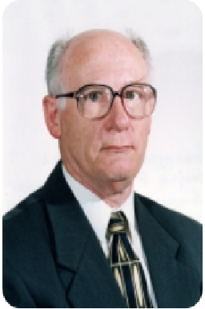
ГАРОЛЬД ЕФИМОВИЧ ЗБОРОВСКИЙ
Профессор-исследователь, доктор философских наук, заслуженный деятель науки Российской Федерации.
Родился: 17 сентября 1938 г., Баку, Азербайджанская ССР, СССР
В 1959 году окончил исторический факультет Уральского государственного университета имени А. М. Горького. После окончания университета четыре года работал в средней школе, преподавая историю.
1963–1975 гг. работал на кафедре философии Свердловского юридического института в должностях ассистента, ст. преподавателя, доцента, профессора. За этот период защитил две диссертации, написал и издал две книги. Направление исследований в эти годы зарубежная социология досуга, проблемы свободного, а также социального времени и пространства..
В 1965 году в Зборовский Г.Е. защитил диссертацию на соискание учёной степени кандидата философских наук по теме «Критика современной буржуазной „социологии досуга“» в Уральском государственном университете имени А. М. Горького.
В 1973 году там же защитил диссертацию на соискание учёной степени доктора философских наук по теме «Свободное время как социологическая категория: (Социально-исторический анализ)».
1975–1981 гг. заведовал кафедрой в Свердловском государственном педагогическом институте. Провел в этот период многомерное исследование образа жизни учительства, опубликовал ряд работ по проблемам образа жизни.
В 1981—2002 годах работал в Российском государственном профессионально-педагогическом университете, где с 1989 года заведовал кафедрой социологии, в 1993-1995 гг. Зборовский Г.Е - проректор университета по международному сотрудничеству. В 1995 г. был удостоен почетного звания «Заслуженный деятель науки РФ», а с 1998 года по 2001 год был директором Института социологии и экономики.
С 2002 года по январь 2012 г. - декан социологического факультета и заведующий кафедрой социологии Гуманитарного университета г. Екатеринбурга.
С января 2012 г. - работает в должности профессора-исследователя кафедры социологии и социальных технологий управления Уральского федерального университета имени первого Президента России Б. Н. Ельцина.
За значительный вклад в развитие отечественной социологической науки и содействие популяризации ее достижений Гарольд Ефимович награжден Серебряной медалью имени Питирима Сорокина, учрежденной ведущими социологическими институтами Академии наук: Институтом социологии РАН и Институтом социально-политических исследований РАН в 2008 году.
Является членом редакционной коллегии журнала «Высшее образование в России», членом редакционного совета журнала «Социологические исследования».
Автор более 400 научных трудов (включая 45 учебников, учебных пособий, монографий) по вопросам теории и истории социологии, проблемам методологии, социальному пространству и времени, образу жизни, личности, социологии управления, социологии культуры, прикладной социологии. Г. Е. Зборовский — один из ведущих отечественных ученых в области социологии образования, социологии досуга.
Некоторые научные труды
1. Зборовский Г. Е. Социология в регионе как предмет научного исследования // Социологический журнал. 2022. Том. 28. № 1. - С. 121-142.
2. Зборовский, Г. Е. Аномалии в высшем образовании как фактор неуспешности студентов // Известия Уральского федерального университета. Серия 1: Проблемы образования, науки и культуры, 28(2). – С. 185-199. https://doi.org/10.15826/izv1.2022.28.2.038
3. Зборовский Г. Е., Амбарова П. А. Образовательная неуспешность российского студенчества: социологическая интерпретация проблемы // Социологические исследования. 2021. № 3. - С. 17-27.
4. Докторов Б. З., Зборовский Г. Е. Поколенческий подход к современной отечественной социологии: общероссийские и региональные аспекты // Социологические исследования. 2021. № 11. С. 79-90. https://www.socis.isras.ru/files/File/2021/11/Doktorov.pdf
5. Зборовский Г. Е., Шаброва Н. В. Сообщество родителей школьников как субъект гражданского общества (на материалах исследования в российском мегаполисе) // Социологический журнал. 2021. Том. 27. № 3. С. 121-146. DOI: https://doi.org/10.19181/socjour.2021.27.3.8427
6. Добреньков В. И., Зборовский Г. Е., Нечаев В. Я. Социологическое образование в России. — М.: Альфа—М., 2003. — 329 с.
7. Зборовский Г. Е. История социологии / Под ред. И. Б. Зорько, Н. Я. Марголина. — М.: Гардарики, 2007. — 608 с. — ISBN 5-8297-0180-4.
8. Зборовский Г. Е., Мансуров В. А. «Переосмысливая неравенство» // Социологические исследования. — 2006. — № 7.
9. Зборовский Г. Е. История социологии: классический этап: учебник для вузов / Г. Е. Зборовский ; Гос. образоват. учреждение высш. проф. образования ХМАО – Югры «Сургут. гос. пед. ун-т»; Урал. федерал. ун-т им. первого Президента России Б. Н. Ельцина. — 2-е изд. испр. и доп.. — Сургут и [др.]: РИО СурГПУ, 2014. — 212 с. — ISBN 978-5-93190-335-4.
10. Зборовский Г. Е. История социологии: современный этап: учебник для вузов / Г. Е. Зборовский ; Гос. образоват. учреждение высш. проф. образования ХМАО – Югры «Сургут. гос. пед. ун-т» ; Федер. гос. авт. образоват. учреждение высш. проф. образования «Урал. федер. ун-т им. первого Президента России Б. Н. Ельцина». — 2-е изд., испр. и доп. — Сургут [и др.]: РИО СурГПУ, 2015. — 260 с. — ISBN 978-5-93190-308-8.
- 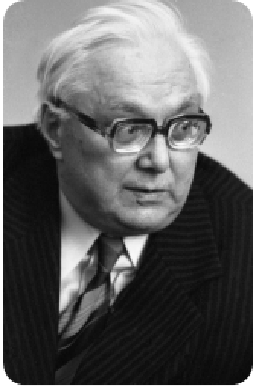
МИХАИЛ ТРИФОНОВИЧ ИОВЧУК
Доктор философских наук, член-корреспондент АН СССР
Родился 6 ноября 1908 г., Заужовье, Кобринский уезд, Гродненская губерния, Российская империя - 9 января 1990 г., Москва, СССР
В 1926 г. стал членом ВКП (б) и поступил на философское отделение Академии Комвоспитания. После окончания в 1931 г. Академии он стал аспирантом Коммунистического университета преподавателей общественных наук и после аспирантуры с 1933 по 1936 гг. работал начальником политотдела совхоза в Белорусской ССР, а затем, с 1936 по 1939 гг. руководил кафедрами диалектического материализма и марксизма-ленинизма в Московском химико-технологическом ин-те им. Д.И. Менделеева и в Московской сельскохозяйственной академии им. К.А. Тимирязева. В этот период он подготовил и защитил кандидатскую диссертацию о философских и социально-политических взглядах Белинского. С 1939 по 1941 гг. М.Т. Иовчук работал в Исполкоме Коминтерна, а с 1941 по 1947 гг. - в Управлении пропаганды и агитации ЦК ВКП (б).
В эти годы Михаил Трифонович стал вести занятия по истории русской философии в Высшей партийной школе и в соавторстве с Г.С. Васецким в 1941 г. опубликовал стенограммы лекций, а затем и книгу "Очерки по истории русского материализма ХУШ и XIX веков" (М., 1942). В 1946 г. он защитил докторскую диссертацию "Из истории русской материалистической философии ХVIII-ХIХ веков" и был избран членом-корреспондентом Академии наук СССР.
В 1943 г. по инициативе М.Т. Иовчука на философском ф-те МГУ им. М.В.Ломоносова была создана кафедра истории русской философии, которой он по совместительству руководил до 1947 г.
В 1947-1949 гг. он был Секретарем ЦК КП Белоруссии по пропаганде и агитации. Летом 1949 г. за подписание некролога С. Михоэлсу (всемирно известный театральный режиссёр и еврейский общественный деятель Соломон Михоэлс был убит по прямому приказу Сталина сотрудниками Министерства государственной безопасности СССР ) он был отозван из Минска и направлен в Свердловск, где был назначен заведующим кафедрой диалектического и исторического материализма Уральского университета им. А.М,Горького.
Л.Н.Коган считал, что переезд М.Т. Иовчука в Свердловск - «это событие имело решающее значение для рождения екатеринбургской социологической школы». (Коган Л.Н. Неповторимая романтика социологии//Российская социология шестидесятых годов в воспоминаниях и документах.-СПб.: Русский христианский гуманитарный институт, 1999- С. 28)
В 1949—1953 годах заведуя кафедрой диалектического и исторического материализма, выступает инициатором проведения социологических исследований на промышленных предприятиях Свердловска (Уралмаш) и Нижнего Тагила (НТМК). Из числа молодых преподавателей кафедры (Коган Л.Н.) лучших выпускников историко-филологического факультета, ставших аспирантами (Г.В.Мокроносов, В.Г.Нестеров, И.М.Сушков, впоследствии докторов наук), лучших заведующих кафедр других вузов города (Г.А.Курсанов, М.Н.Руткевич) создает первую исследовательскую группу для реализации этих планов. Диссертации аспирантов, первые научные публикации содержали конкретный материал, собранный на предприятиях Свердловска.
М.Т. Иовчук был талантливый организатор, человек феноменального трудолюбия. Работая в Свердловске, добился открытия кафедры философии не только в Уральском университете, но и в Уральском филиале (ныне отделении) Академии наук страны. Он организовал первые на Урале методологические философские семинары, в которых участвовали крупнейшие ученые. В областной газете «Уральский рабочий» по его инициативе и под его редакцией было опубликовано 15 лекций по философии. Михаила Трифоновича по праву считают одним из основателей свердловской философской школы. Л.Н.Коган писал о нем: «…я люблю этого человека, считаю его своим единственным учителем» ( см. Коган Л.Н. Неповторимая романтика социологии//Российская социология шестидесятых годов в воспоминаниях и документах.-СПб.: Русский христианский гуманитарный институт, 1999- С. 282)
С 1953 г. он вновь работает в Москве профессором философского ф-та МГУ им. М.В. Ломоносова. В 1958 г. он стал организатором и первым заведующим (до 1963 г.) кафедры истории марксистско-ленинской философии философского ф-та МГУ. Одновременно он стал заведующим сектором в Институте философии АН СССР и участвовал в качестве автора и члена редколлегии в подготовке шеститомной «Истории философии», пятитомной "Истории философии в СССР" и пятитомной "Философской энциклопедии".
С 1958 г. более десяти лет Иовчук М.Т. был главным редактором журнале "Философские науки. Научные доклады высшей школы" и «…будучи главным редактором журнала «Философские науки», добился того, чтобы журнал систематически публиковал результаты социологических исследований…» ( Коган Л.Н. Неповторимая романтика социологии//Российская социология шестидесятых годов в воспоминаниях и документах.-СПб.: Русский христианский гуманитарный институт, 1999- С. 281)
В 1970-1977 гг. - ректор Академии общественных наук при ЦК КПСС. Став ректором Академии, М.Т. Иовчук создает в ней мощный социологический центр и кафедру социологии.
Награжден пятью орденами СССР, медалями. Последние годы работал в Институте философии АН СССР.
Некоторые научные труды
1. История философии, в 6 томах (соавтор). Издание АН СССР, 1957–1965 гг.
2. Иовчук М. Т. Белинский. Его философские и социально-политические взгляды. М., 1939. 192 с.
3. Иовчук М. Т. Развитие материалистической философии в России в XVIII—XIX веках. М., 1940.
4. Иовчук М. Очерки по истории русского материализма XVIII—XIX вв. М., 1942. 274 [2]с
5. Иовчук М. Т. Философские и социологические взгляды Н. П. Огарева. М., 1957. 115 с.
6. Иовчук М. Т. История философии как наука, её предмет, метод и значение. М., 1960.
7. Иовчук М. Т. Г. В. Плеханов и его труды по истории философии. М., 1960. 316 с.
8. Иовчук М. Т. Ленинизм, философские традиции и современность. М., 1970.
- 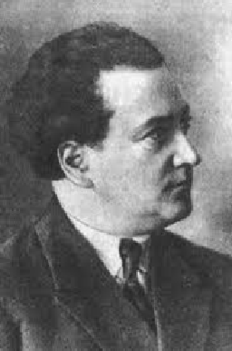
КАЦЕНБОГЕН СОЛОМОН ЗАХАРОВИЧ
Один из основоположников социологии в Беларуси и России (1920-х гг), государственный и партийный деятель, советский философ и социолог, организатор кафедры философии в Уральском государственном университете им. А.М.Горького (1943г), научный руководитель Л.Н.Когана в студенческие годы.
В 1898—1904 — учащийся одной из минских гимназий. В средних классах увлёкся политической деятельностью (в 1904 стал членом Бунда), в 1904 исключён из 5-го класса за участие в забастовке гимназистов, проводившейся в защиту интересов учащихся польской национальности. В 1905 принимал активное участие в революционных вооружённых демонстрациях, проходивших в Минске. После — переехал в Гродно, где в 1910 окончил местную гимназию и получил аттестат зрелости.
В 1910—1914 учился на экономическом факультете Киевского коммерческого института. Во время учёбы в Киеве проявил склонность к «учёным исследованиям» и талант журналиста, регулярно печатался в киевских журналах и газетах на «социологические и политические темы», в 1912 выпустил монографию «Крестьянские войны в Германии». Получив в 1914 г. свой первый диплом о высшем образовании, 25-летний экономист принял решение о продолжении учебы и поступил на третий курс юридического факультета Петербургского психоневрологического института. Выбор не был случайным: именно в нем в 1911 г. была открыта первая в Российской империи кафедра социологии, которую возглавляли ведущие специалисты того времени: М. М. Ковалевский, Е. В. Де Роберти, К. Н. Тахтарев. Окончание института совпало с годом начала глубинных и масштабных трансформаций на всем постимперском пространстве, вызванных революционными потрясениями 1917 г.
В 1917—1921 активно занимался партийно-политической деятельностью: заместитель председателя Бобруйского Совета рабочих, солдатских и крестьянских депутатов (от партии Бунд)); в феврале 1919 г. — июле 1920 г. — народный комиссар социального обеспечения Литовско-Белорусской ССР. В 1920 г. Соломон Захарович вступил в ряды ВКП(б) и после освобождения Минска от польских войск в июле 1920 г. Соломон Захарович, был назначен наркомом социального обеспечения ССРБ, в июле 1921 г. его перевели на должность заместителя наркома просвещения республики.
С июля 1921 г. по сентябрь 1925 г. — в Белорусском государственном университете (БГУ): профессор по специальности «история» (читал для студентов факультета общественных наук (ФОН) курсы лекций по генетической социологии, общей марксистской социологии и истории первобытной культуры, заведующий кафедрой социологии и первобытной культуры, заместитель ректора, заведующий кафедрой философии, декан ФОН, а также — с марта 1924 г. — директор музея первобытной культуры и религии (ныне — музей исторического факультета).
В период работы в университете профессора-социолога студенты факультета общественных наук, а также педагогического факультета в обязательном порядке слушали его курс «Генетическая социология». В педагогической работе С. З. Каценбоген стремился идти в ногу со всеми методическими новациями, углубляя практические ориентиры учебного процесса. Свободно говорил, читал и писал на немецком и французском языках. Постоянно выписывал заграничные периодические издания для ведения курса по генетической социологии и первобытной культуре, переводил современных немецких и французских авторов, публиковал их, использовал в лекциях. Сложность положения профессора-лектора заключалась в том, что требовалось доказывать необходимость социологии для решения задач социалистического строительства и в то же время решительно отмежевываться от ее основоположников, которые, по мнению адептов нового строя, были величайшими идеологами буржуазии. Следовало представить социологию как важную составную часть марксистско-ленинского мировоззрения студентов. По его мнению, социология стала наукой только тогда, когда под нее был подведен солидный исторический, этнографический фундамент. С первобытной культурой он связывал последующие тенденции в развитии человечества.
В 1924 стажировался в Германии, изучал новейшую философскую и социологическую литературу, работал в этнографических музеях первобытной культуры.
В 1925—1932 работа в Саратовском государственном университете (СГУ): декан вновь образованного факультета права и хозяйства и одновременно — заведующий кафедрой исторического материализма. В декабре 1925 г. утверждён в звании профессора по курсу «Исторический материализм»; в 1928—1932г. был ректором университета, а затем директором. Способствовал организации и развитию социологической науки в СГУ.
В 1932—1935 — ректор Педагогического института им. А.И. Герцена в Ленинграде. В1935 г. «получил звание мастера педпрофессии в результате специальной проверки преподавания в Вузах Ленинграда».
После убийства в декабре 1934 г. С. М. Кирова Соломон Захарович попал в водоворот репрессий и политических арестов. В статье, опубликованной в журнале «Под знаменем марксизма», анонимный автор назвал его двурушником и бывшим троцкистом.
В 1935 г. С. З. Каценбоген переехал в Свердловск, где стал сначала проректором, а затем и директором Свердловского педагогического института. За критику экономической политики советской власти, был понижен в должности, трижды партсобранием педагогического института исключался из ВКП(б) как «троцкист». Удивление вызывает тот факт, что вышестоящие партийные органы эти решения партийных собраний не утверждали.
В 1939—1946 преподавал в Уральском государственном университете, в 1943 организовал в нём кафедру философии (до этого – кафедра марксизма-ленинизма), которой заведовал вплоть до самой смерти. В университете он удостоился быть одним из первых научных руководителей открывшейся аспирантуры, а в 1945 г. ему было присвоено почетное звание «Отличник народного просвещения».
Уникальная личность, незаурядный ученый и выдающийся организатор высшей школы, блистательный и требовательный педагог - таким был С.З Каценбоген, научный руководитель Л.Н.Когана, писавшего под его руководством свои студенческие курсовые работы, диплом и первые научные статьи.
Некоторые научные труды
1. Каценбоген С. З. Марксистская социология. — 2013. — 140 с. — ISBN 5458532120.
2. Каценбоген С. З. Первобытный человек. Опыт социологического анализа этнографического романа Ренэ Марана «Батуала». — Минск: Белтрестпечать, 1923. — 50 с.
3. Каценбоген С. З. Что такое марксизм? (Философские и Социологические основания). — Минск: Белгосиздат, 1925. — 157 с.
- 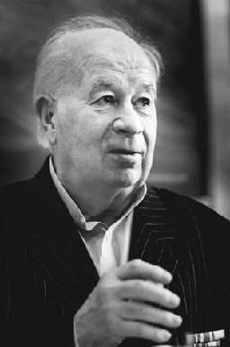
КОНСТАНТИН НИКОЛАЕВИЧ ЛЮБУТИН
Советский и российский философ, специалист по истории философии и теории познания, доктор философских наук, профессор, почётный профессор Уральского государственного университета (2000), вице-президент Российского философского общества (1993—1999), заслуженный деятель науки РСФСР (1981)
Родился 25 февраля 1935, д. Папулиха, Мантуровский район, Костромская область, СССР — 17 сентября 2018, Екатеринбург, Россия
К.Н. Любутин окончил философский факультет МГУ имени М. В. Ломоносова в 1957 году и получил направление в г. Нижний Тагил, где с 1957 г. по 1959 г. работал преподавателем истории КПСС в техническом училище № 16.
В 1959 г. поступил в аспирантуру при кафедре философии Уральского государственного университета им. A.M. Горького. В 1960 г. был переведен на должность старшего преподавателя указанной кафедры. Вся его трудовая деятельность в последующем связана с УрГУ.
В 1963 году же защитил диссертацию на соискание учёной степени кандидата философских наук, а в 1973 году - диссертацию на соискание учёной степени доктора философских наук по теме «Проблема субъекта и объекта в немецкой классической и марксистско-ленинской философии».
Константин Николаевич известен как крупный организатор науки и высшего образования, один из основателей уральской философской школы. При его непосредственном участии в 1965 г. в УрГУ доктором философских наук М.Н. Руткевичем был организован философский факультет. В 1970 г. К.Н. Любутиным была организована кафедра истории философии философского факультета УрГУ. Будучи деканом философского факультета УрГУ, в 1988 году совместно с заведующим кафедрой теории научного коммунизма и социологии Л.Н.Коганом инициировал и добился открытия обучения студентов по специальности «СОЦИОЛОГИЯ» на философском факультете УрГУ.
С 1988 г. К.Н. Любутин по совместительству работал в Институте философии и права УрО АН СССР, организации и укомплектованию высококвалифицированными кадрами которого он способствовал.
К.Н. Любутин долгое время был председателем бюро Уральского отделения философского общества СССР, а затем - Российского философского общества, вице-президентом Российского философского общества, членом редакционной коллегии журнала «Философские науки», членом Экспертного совета ВАК по философским наукам., председателем совета по защите докторских диссертаций при УрГУ, заместителем председателя совета по защите докторских диссертаций при Институте философии и права УрО РАН.
К.Н. Любутин - автор около двадцати научных монографий, более трехсот иных научных и научно публицистических работ.
Среди учеников Константина Николаевича около 70 кандидатов философских наук и 26 докторов философских наук. Заслуги К.Н. Любутина перед отечественной наукой и образованием были отмечены высокими правительственными и неправительственными наградами. В 1976 г. он был награжден орденом «Знак почета», в 1995 г. - орденом Дружбы. К.Н. Любутину вручены также медали «За доблестный труд», в ознаменование
100-летия со дня рождения В.И. Ленина, «Ветеран труда». За заслуги в научной и педагогической деятельности Указом Президиума Верховного Совета РСФСР от
29 мая 1981 г. Константину Николаевичу было присвоено почетное звание «Заслуженный деятель науки РСФСР». В 1992 г. К.Н. Любутин был избран действительным членом Российской академии естественных наук (РАЕН).
Труды и идеи К.Н. Любутина широко известны не только в нашей стране, но и за рубежом. Он - участник многих международных философских семинаров, конференций, симпозиумов, конгрессов, в том числе трех всемирных философских конгрессов
Некоторые научные труды
1. От «рассудка» к «разуму» (Кант, Гегель, Фейербах). - Екатеринбург: Изд-во Урал, ун-та, 1991. - 160 с. - Соавт.: Володин В.Н., Нарский И.С.
2. Диалектика субъекта и объекта. - Екатеринбург: Изд-во
Урал.ун-та, 1993. - 416 с. - Соавт.: Пивоваров Д.В.
3. Западная философская антропология: от Фейербаха к Фромму; Учеб. пособие. - Екатеринбург: Изд-во УрГЮА, 1994. 160 с. - Соавт.: Грибакин А.В.
4. Человек в философском измерении: от Фейербаха к Фромму /
науч. ред. Н.С. Рыбаков. - Псков: Изд-во Псков, обл. Ин-та
усоверш. учителей, 1994. - 132 с.
5. Классическая философская антропология: И. Кант и Л. Фейербах (От трансцендентальной антропологии И. Канта к
гуизму Л. Фейербаха). - Екатеринбург: Изд-во Урал. гос.
ун-та; Нижневартовск : Изд-во Нижневарт. пед. ин-та,
1995. - 239 с. - Соавт.: Бурханов Р.А
6. Российские версии марксизма: Николай Бухарин / Отв. ред. А.В. Гайда. - Екатеринбург: УрО РАН, 2000. - 206 с. - Соавт.: Мошкин С. В.
7. Синтетическая теория идеального. - Екатеринбург: Изд-во
Урал. гос. ун-та; Псков: Изд-во Псков, обл. ин-та повышения
квалификации работников образования, 2000. - 207 с. - Соавт.: Пивоваров Д.В.
8. Любутин, К. Н. Проблема субъекта и объекта в немецкой классической и марксистской философии: монография /К. Н. Любутин; под ред. П. Н. Кондрашова. - 4-е изд., стер. - Москва :Флинта, Изд-во Урал. ун-та, 2017. - 331 с.
- 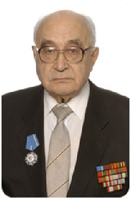
МЕРЕНКОВ АНАТОЛИЙ ВАСИЛЬЕВИЧ
Доктор философских наук, профессор, заведующий кафедрой прикладной социологии; Почетный профессор Уральского федерального университета (2019); Почетный работник Общего образования РФ (2005); Действительный член Международной академии наук высшей школы (1993); Действительный член Академии гуманитарных наук (2013); Действительный член Академии социальных наук (2017);
Родился 1 апреля 1946 г., г. Витебск, Белоруссия.
В 1971 г. окончил философский факультет Уральского университета им. А. М. Горького и поступил в аспирантуру. Вся его трудовая деятельность связана с УрГУ/УрФУ: ассистент (1972-1975), старший преподаватель (1975-1978), доцент (1978-1987) профессор (с 1987 г). В 1975 г. защитил в УрГУ кандидатскую, а в 1986-м — докторскую диссертацию.
С 1989 г., с момента создания, возглавляет кафедру прикладной социологии Уральского государственного университета. Кафедра была первой на Урале и в Сибири научно-образовательной структурой, которая начала подготовку профессиональных социологов одновременно с организацией этой деятельности в МГУ и СПбГУ.
С 2009 по 2020 гг. Меренков А.В.- декан факультета (впоследствии директор департамента) политологии и социологии. С 2018 г. — зам. директора Уральского гуманитарного института УрФУ по науке и инновационной деятельности.
В 1994 г. создал и возглавлял до 2008 г.( по совместительству) гимназию № 207, занимающуюся инновациями в воспитании детей 3–17 лет. Созданные под его руководством образовательные проекты были отмечены дипломами всероссийских конкурсов, а в 2005 г. проект «Воспитание самоорганизованной личности в условиях общеобразовательной школы» стал лауреатом Российского образовательного форума.
А. В. Меренков опубликовал около 350 научных работ. Среди них 22 индивидуальных и 14 коллективных монографий, 15 статей, входящих в базу Scopus и Web of science, по актуальным проблемам развития личности.
Анатолий Васильевич Меренков является создателем нового направления: педагогики саморазвития личности, раскрывающей механизмы нормативного и асоциального развития детей, развернутой теории детерминации человеческой деятельности, теории и практики изучения стереотипов в социологии. Под его научным руководством проведено несколько всероссийских, около 40 региональных социологических исследований, включая изучение имиджа УрФУ в УрФО; ориентаций выпускников колледжей и вузов Среднего Урала на трудоустройство; удовлетворенность студентов учебой, ППС и сотрудников УрФУ условиями труда. Он активно участвовал в проведении V Всероссийского социологического конгресса на базе УрФУ в 2016-м. В 2003 г. А. В. Меренков получил Свидетельство РФ на полезную модель «Интегративные технологии здоровьесбережения молодого поколения».
Опубликовал 22 учебника, учебных пособия по проблемам воспитания детей разного возраста, формирования навыков профессионального самоопределения у школьников, студентов. В 1995 г. его авторский курс для учащихся школ по вопросам нравственного воспитания стал лауреатом Конкурса инновационных проектов, проводимых Минобразом РФ. А. В. Меренков — член УМО по социологии и социальной работе.
Анатолий Васильевич ведет активную общественную деятельность. Он является членом Общественно-политического совета при губернаторе Свердловской области. С 2016 г. — ведущий эксперт Свердловского регионального отделения Национальной родительской ассоциации. Много времени и сил уделяет распространению в массовой аудитории знаний по теории и практике нравственного воспитания детей, выступая перед разными аудиториями, а также в телепередачах по актуальным проблемам воспитания.
Под руководством Анатолия Васильевича защищены 7 докторских и 64 кандидатских диссертаций. С 2007 года является председателем диссертационного совета Д212.285.17 на базе Уральского федерального университета. В 2016 году возглавляемый им диссертационный совет признан лучшим в России.
За огромную педагогическую и просветительскую работу А.В.Меренкову вручены благодарности Администрации Октябрьского района. Управления образования г. Екатеринбурга (2001-2007 гг.), Администрации г. Екатеринбурга (2003-2006 гг.), Министерства общего и профессионального образования Свердловской области (2016 г.), Правительства Свердловской области (2002 г.), председателя УрО РАО (2010 г., 2011 г.). Он награжден Почетными грамотами Правления общества «Знание» РСФСР (1987 г.), УрГУ- УрФУ (2004, 2010 гг.), Управления образования г. Екатеринбурга (2006), главы г. Екатеринбурга (2005), МОПО Свердловской области (2004), Минобраза Челябинской области (2006), Зак. собрания Свердловской области (2004), Правительства Свердловской области (2006), Губернатора Свердловской области (2016); оргкомитета общественной инициативы «Спасибо» (2017). «Ветеран УрГУ» (2006)., Почетной грамотой гос. комитета СССР по народному образованию (1990);Медалью «За заслуги в развитии образования» (2000); Медалью К. Д. Ушинского Минобрнауки России (2008); Медалью Российского общества социологов (2014).
Некоторые научные труды
1. Меренков А.В. Культура эгоизма или культура сотрудничества: какая побеждает? – Екатеринбург: Изд-во Уральского ун-та, 2021. – 274 с.
2. Меренков А.В. Духовно-нравственное развитие детей 7-10 лет (начальная школа): методическая разработка для родителей, учителей, классных руководителей. – Екатеринбург: Изд-во ИСТУ, 2017. – 83 с.
3. Киселев В.Н., Меренков А.В. Особенности жизненных ценностей молодых рабочих. – Екатеринбург: Изд-во УГГУ, 2012. – 64 с.
4. Меренков А.В. Самоопределение учащихся: учебное пособие для учащихся 8-9 классов. – М. : Издательский центр «Aкадемия», 2008. – 224 c.
5. Меренков А.В. Человек: взаимосвязь природного и социокультурного: монография. - Екатеринбург: Изд-во УГГУ, 2007. – 280 с.
6. Меренков А.В. Система детерминации человеческой деятельности: монография. – Екатеринбург: Изд–во Урал. гос. горно-геологической академии, изд-во Банк культурной информации, 2003. – 228 с
7. Меренков А.В. Наука и искусство любви. Екатеринбург: Издательство Урал. ун-та , 2002. – 224 с.
- 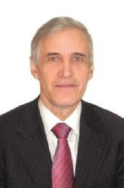
ГЕРМАН ВИКТОРОВИЧ МОКРОНОСОВ
Доктор философских наук, почетный профессор УГТУ/УПИ, заслуженный деятель науки РФ (1990 г.), член Академии гуманитарных наук
Родился 9 ноября 1922 года в городе Нижний Тагил Нижне-Тагильского уезда Екатеринбургской губернии. С 1940 года призван в ряды Рабоче-Крестьянской Красной армии. С 1945 года участник Советско-японской войны на 1-м Дальневосточном фронте.
С 1943 по 1948 с перерывами обучался на историко-филологическом факультете Уральского государственного университета. По окончании был принят в аспирантуру по кафедре философии и отобран в первую исследовательскую группу преподавателей и аспирантов кафедры, реализующую социологические проекты на промышленных предприятиях города и области. Полученные в результате этих исследований данные были использованы им при написании кандидатской диссертации.
В 1953 г. защитил кандидатскую, а в 1973 г. – докторскую диссертацию.
Г. В. Мокроносов с 1952 г. работал в Уральском политехническом институте им. С. М. Кирова. Со времени основания в нем кафедры философии работал заведующим кафедрой (1957–1995 гг.).
В конце 1950-х 1960-е годы принимает участие проведении первых социологических исследований на промышленных предприятиях города наряду с другими заведующими кафедрами общественных наук, такими как Л.Н.Коган, А.М.Архангельский, Ю.Е.Волков, О.Н.Жеманов, В.Г.Нестеров, профессорами и доцентами вузов города.
В 1976–1986 гг. избирался деканом факультета общественных наук (ФОНа) – первого в техническом вузе Урала. В 1986 г. был избран членом-корреспондентом АН СССР.
В 1978–80 гг. работал профессором-консультантом в Карловом университете (Прага). Являлся членом Ученого совета университета и факультета гуманитарного образования УрФУ.
Научные интересы Г. В. Мокроносова – разработка теории единства общественных отношений и индивидуальной жизнедеятельности человека.
Герман Викторович – автор 5 монографий, более 250 научных статей в отечественных и зарубежных изданиях. Принимал участие в работе научно-технических конференций и конгрессов, в том числе международных (Варна, Прага, Москва). Под руководством Г. В. Мокроносова защищено 65 кандидатских диссертаций, 16 его учеников стали докторами наук.
Герман Викторович – Заслуженный деятель науки РФ (1990 г.), член Академии гуманитарных наук, Почетный профессор УГТУ/УПИ (2002 г.). За плодотворный труд удостаивался правительственных наград: награжден медалью «Ветеран труда», Указом Президента РФ награжден орденом «Знак Почета» (2002 г.), Почетной грамотой Губернатора Свердловской области (1997 г.).
Некоторые научные труды
1. Мокроносов Г. В. Роль культурно-технического подъема рабочих в ликвидации существенного различия между умственным и физическим трудом в СССР : автореф. дис. …канд. философ. наук / Г. В. Мокроносов ; Урал. гос. ун-т им. А. М. Горького. – Свердловск, 1953. – 16 с.
2. От социалистических общественных отношений к коммунистическим : сб. ст. / Урал. политехн. ин-т им. С. М. Кирова ; науч. ред. Г. В. Мокроносов, Д. Т. Поздняков. – Свердловск, 1963. – 151 с.
3. Личность и общество : сб. ст. в помощь изучающим марксистско-ленинскую философию / Урал. политехн. ин-т им. С.М. Кирова ; науч. ред. Г. В. Мокроносов. – Свердловск, 1967. – 170 с.
4. Мосоров А. М. Общественные отношения и личность : монография / А. М. Мосоров, Г. В. Мокроносов ; науч. ред. Д. Т. Поздняков ; Урал. политехн. ин-т им. С. М. Кирова. – Свердловск : УПИ, 1969. – 145 с.
5. Мокроносов Г. В. Общественные отношения, интересы, мотивы / Г. В. Мокроносов ; М-во высш. и сред. спец. образования РСФСР, Урал. политехн. ин-т им. С. М. Кирова. – Свердловск : УПИ, 1971. – 116 с.
6. Марксистско-ленинская философия. Исторический материализм : учеб. пособие. Вып. 1 / под ред. Г. В. Мокроносова. – Свердловск : Изд-во Урал. политехн. ин-та, 1972. – 101 с.
7. Марксистско-ленинская философия. Исторический материализм : учеб. пособие. Вып. 2/ под ред. Г. В. Мокроносова. – Свердловск : Изд-во Урал. политехн. ин-та, 1972. – 70 с.
8. Мокроносов Г. В. Методологические проблемы исследования общественных отношений / Г. В. Мокроносов ; Урал. политехн. ин-т им. С. М. Кирова. – Свердловск : Сред.- Урал. кн. изд-во, 1972. – 380 с.
- 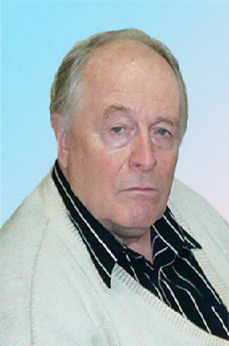
БОРИС СЕРГЕЕВИЧ ПАВЛОВ
Доктор философских наук, профессор, академик Российской Академии Естествознания.
Родился 30 июля 1941 г., Грузинская ССР, г. Тбилиси.
Окончив в 1963 году Челябинский политехнический институт, получив диплом инженера-механика по гусеничным и колесным машинам, он пять лет проработал инженером-технологом, а затем старшим мастером в опытном цехе завода им. Я.М. Свердлова (ныне АО «Уралтрансмаш»).
Павлов Б. всерьез увлекся комсомольской работой, пройдя путь от заместителя секретаря комитета предприятия до инструктора отдела пропаганды и агитации обкома ВЛКСМ. Стремление к новым знаниям обнаружило в Борисе вкус к социологии, изучению различных отношений в молодежной среде. Итог — аспирантура УНЦ АН СССР, где он познакомился со своим руководителем и наставником Львом Наумовичем Коганом. В 1974 году в стенах Уральского государственного университета им. А.М. Горького Б.С. Павлов успешно защитил диссертацию по проблемам рабочих общежитий, в том же году стал младшим научным сотрудником Института экономики. А в 1985-м в Новосибирском Академгородке состоялась защита его докторской диссертации на тему «Воспроизводство молодой смены рабочего класса».
Сегодня профессора Б.С. Павлова можно смело причислить к основоположникам современной уральской социологии. Сфера его научных интересов сформировалась давно и окончательно: проблемы семьи, молодежи, детства, образования; труд и демография; экология; электоральные предпочтения и общественное мнение различных групп населения; проблемы расширенного воспроизводства инженерных кадров в промышленности Урала.
За 50 лет работы в Институте экономики УрО РАН ученый провел около 400 авторских социологических исследований во многих субъектах огромной страны. Его команда реализовала более 80 различных программ, связанных с оценкой населением экономических реформ, строительством и реконструкцией различных промышленных предприятий, экологической безопасностью регионов, разработкой молодежной политики в городах ЗАТО, подготовила ряд концепций демографической региональной политики.
В 1976–2014 гг. в Институте экономики сформировалась признанная научная школа «Воспроизводство человеческого потенциала в регионе» во главе с профессором Б.С. Павловым. Научно-исследовательская интеграция в рамках одного академического института двух общественных исследовательских направлений обусловила уникальный, по крайней мере, для отечественной социологии, процесс формирования ее «третьего крыла» (наряду с вузовской и заводской) — региональной академической социологии.
Б.С.Павлов подготовил 15 кандидатов, 6 докторов наук и около 50 магистрантов. Начиная с 2005 г. является научным экспертом Законодательного Собрания Свердловской области Министерство общего и профессионального образования Свердловской области традиционного регионального конкурса молодежи образовательных учреждений и научных организаций на лучшую работу «Моя законотворческая инициатива».
Профессор Б.С. Павлов — автор и соавтор около 850 научных работ, в том числе 180 брошюр, 60 монографий и книг. Его статьи выходят в свет в ведущих зарубежных журналах, в сборниках международных конгрессов и конференций. Уральский ученый имеет стабильные показатели цитирования в научно-электронной библиотеке Е-library, высокие индексы Хирша и РИНЦ, а также престижные позиции в списке рейтинга «Демография топ 100».
В 2021 году Борис Сергеевич Павлов первым в Свердловской области удостоился необычного ордена — Labore et Scientia («Трудом и Знанием»). От имени Европейского научно-промышленного консорциума эта награда вручается наиболее известным российским и зарубежным ученым за признанный мировым сообществом вклад в развитие современной научной мысли и образования.
Некоторые научные труды
1. Павлов Б. С. Экология и социально-валеологическое самочувствие населения на Урале (на примере ВУРС) : монография / Б. С. Павлов, Л. П. Бердник, Н. И. Разикова ; [отв. ред. Б. С. Павлов] ; РАН, УрО, Ин-т экономики, УрФУ им. первого Президента России Б. Н. Ельцина. - Екатеринбург, 2011. - 560 с.
2. Павлов Б. С. Воспроизводство человеческого потенциала в регионе: теоретические и методические аспекты социально-экономического анализа (на примере Урала) : монография / Б. С. Павлов ; ред. А. И. Татаркин ; УрФУ им. первого Президента России В. Н. Ельцина, Институт экономики УрО РАН. - Екатеринбург, 2014. - 575с.
3. Павлов Б. С. Экономическое поведение молодежи на Урале: социально-психологический анализ : монография / Б. С. Павлов, С. А. Анисимов ; [под общ. ред. Б. С. Павлова] ; РАН, УрО, Ин-т экономики, Урал. федер. ун-т им. первого Президента России Б. Н. Ельцина, Физ.-технол. ин-т. - Екатеринбург, 2016. - 598 с.
4. Павлов Б. С. Внеучебный производительный труд учащейся молодёжи как фактор её профессиональной социализации / Б. С. Павлов // Материалы IV Всероссийского симпозиума по региональной экономике, Екатеринбург 3 октября-4 октября 2017 г. : Т. 1. - Екатеринбург, 2017 - С. 133-139.
5. Павлов Б. С. Первоначальный выбор профессии молодым человеком в контексте его перманентных жизненных рисков / Б. С. Павлов, Е. И. Пронина, Д. Б. Павлов // Материалы IV Всероссийского симпозиума по региональной экономике, Екатеринбург 3 октября-4 октября 2017 г. : Т. 1. - Екатеринбург, 2017 - С. 139-144.
6. Совершенствование теоретико-методологических основ формирования инновационной и финансовой стратегий развития территориальных систем разного уровня : монография / В. С. Бочко [и др.] ; [под общ. ред. В. С. Бочко] ; РАН, УрО, Ин-т экономики. - Екатеринбург, 2017. - 203 с.
- 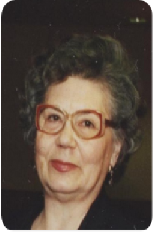
ЛЮДМИЛА ЯКОВЛЕВНА РУБИНА
Профессор, доктор философских наук, Отличник народного просвещения, Почетный профессор УрГПУ
Выпускница филологического факультета УГУ 1956 года, Людмила Яковлевна начала свой трудовой путь в ШРМ № 11 г. Свердловска учителем русского языка и завучем школы. 1963-1973 годы связаны с альма-матер: аспирантура, работа на кафедре философии, кафедре эстетики и научного коммунизма, активное участие в проведении знаковых для развития уральской социологии исследований на промышленных предприятиях Свердловска и области. С 1973 года Л.Я. Рубина работает в УрГПУ – заведующий кафедрой социологии, директор департамента социально-гуманитарного образования.
Известный в России и за рубежом ученый-социолог, специалист в области философии и социологии образования, методике учебно-воспитательной работы в учебном заведении. Многочисленные монографии и научные статьи по проблемам молодежи и студенчества, лидерства и модернизации высшего образования, учебники по социологии, доклады на симпозиумах и конференциях востребованы в учебном процессе, при разработке концепции, Стратегии и закона об образовании.
Под руководством Л.Я.Рубиной сформировался высококвалифицированный творческий коллектив опытных ученых-социологов и талантливой научно-педагогической молодежи. Созданная при кафедре социологическая лаборатория являлась центром исследований по социологии педагогического образования. Под руководством Л.Я. Рубиной были защищены 2 докторских и 12 кандидатских диссертаций.
Рубина Л.Я. творчески участвовала в организации и научно-методическом обеспечении развития новых форм и направлений педагогического образования, являясь членом коллегии Министерства общего и профессионального образования Свердловской области, членом диссертационных советов и председателем диссертационного совета в УрГПУ, редактором многих научных изданий. Благодаря научным заслугам и организаторской роли Л.Я. Рубиной, создано Екатеринбургское отделение Академии социальных наук, члены которого возглавляют важные направления исследований в области социологии, философии, психологии, участвуют в экспертизе управленческих решений органов власти Свердловской области.
Эрудированность, безупречная грамотность, любовь к языку и поэзии, энциклопедические знания, гибкость ума, умение анализировать и четко формулировать мысли снискали Людмиле Яковлевне высокий авторитет в научном мире.
Некоторые научные труды
1. Рубина Л.Я.Актуализация проблем социально-гуманитарного образования в вузе // Педагогическое образование в России. – 2012. https://cyberleninka.ru/article/n/aktualizatsiya-problem-sotsialno-gumanitarnogo-obrazovaniya-v-vuze
2. Рубина Л.Я. Воспитание и воспитательная работа в школе: взгляд социолога // Образование и наука. Известия УРО РАО. 2006. № 3(39). С. 97-108.
3. Рубина Л.Я. Повышение роли общественности в модернизации российского образования // Демократизация и перспективы развития международного сотрудничества: Сборник материалов международной научно-практической конференции. Омск, 2003.
4. Рубина Л.Я., Айрапетова С.Н. Может ли социология помочь в формировании социального заказа на образование? // Социологические исследования. 2000. № 5.
5. Вишневский Ю.Р., Рубина Л.Я. Социальный облик студенчества 90-х годов // Социологические исследования. 1997. № 10. С. 56-69.
6. Рубина Л.Я. Профессиональное и социальное самочувствие учителей // Социологические исследования. 1996. № 6. С. 63-75.
7. Кадровый потенциал вуза: Прогр., концепция, методика, инструм. исслед. / Отв. Л.Я. Рубина. Екатеринбург: УГПУ, 1995.
8. Руткевич М.Н., Рубина Л.Я. Общественные потребности, система образования, молодежь. М.: Политиздат, 1988.
9. Рубина Л.Я. Советское студенчество: Социологический очерк. М.: Мысль, 1981.
- 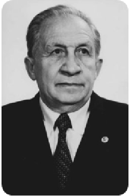
МИХАИЛ НИКОЛАЕВИЧ РУТКЕВИЧ
Советский и российский философ и социолог, доктор философских наук (1961), член-корреспондент АН СССР (1970), организатор и первый декан философского факультета Уральского университета (1966−1972), директор Института конкретных социологических исследований АН СССР (1972−1976)
Окончил с отличием физический факультет Киевского государственного университета (1939) и в том же году вышла его статья в «Журнале экспериментальной и теоретической физики» (№ 10). Участник Великой Отечественной войны, демобилизован в 1945 году старшим лейтенантом.
С 1945 года в Свердловске, где первоначально работал в оптической лаборатории на военном заводе, одновременно выступая с лекциями о причине победы в ВОВ и заочно сдавая экзамены исторического факультета. По предложению секретаря городского комитета ВКП(б) Д. И. Чеснокова перешёл на работу лектором городского комитета партии и одновременно поступил к нему в заочную аспирантуру по философии. Работу над диссертацией «Практика — основа познания и критерий истины» защитил в 1950 г. Позже диссертация была издана монографией издательством «Мысль», а также переведена на чешский язык.
С 1950 по 1953 год работал в Свердловском педагогическом институте, организовав в 1952 году кафедру философии. С 1951 года по совместительству работал в Уральском государственном университете, в том числе в составе исследовательских групп по проведению социологических исследований на промышленных предприятиях города, проводимых под руководством Иовчука М.Т.
В 1953 году (после возвращения в Москву М. Т. Иовчука) полностью перешёл в университет, по предложению обкома партии возглавив кафедру философии УрГУ.
В 1953—1966 являлся заведующим кафедрой диалектического и исторического материализма Уральского государственного университета.
Во второй половине 50-х годов на кафедре начинают разворачиваться регулярные и полномасштабные социологические исследования. По результатам этой работы была подготовлена вышедшая в свет в 1961 году в Москве монография «Культурно-технический подъем рабочего класса в СССР». Эта книга стала первым в стране монографическим исследованием по конкретной социологии, ее появление вызвало большой интерес, как в нашей стране, так и за рубежом. К сбору материала для данной монографии, помимо аспирантов и преподавателей кафедры, были привлечены сотрудники первой в стране вузовской лаборатории социологических исследований, так же организованной благодаря М.Н. Руткевичу. Лаборатория была создана приказом Министерства высшего и среднего специального образования РСФСР № 79 от 1 февраля 1960 года.
К середине 60-х годов благодаря работе большого исследовательского коллектива под руководством Руткевич М.Н. был накоплен конкретный материал, представляющий картину сложной системы групп и слоев советского общества. Рассмотрению подвергалась не только социально-классовая, но и социально-демографическая, социально-территориальная, профессиональная структура. Это было отражено в Материалах 1-й Всесоюзной конференции по социальной структуре (Минск, 1966), на которой свердловчане были приняты и признаны профессиональным сообществом как представители уральской школы социологии.
В 1961 на Урале году впервые в СССР начали проводиться исследования жизненных планов выпускников школ, учащихся техникумов, ПТУ, студенчества. Их результатом был вышедший в 1966 году под редакцией М. Н. Руткевича сборник статей «Жизненные планы молодежи», который был переведен в США и вошел в десятку лучших работ по социологии за 1966 год.
Огромная заслуга Руткевича М.Н. заключается в создании им в 1965 году философского факультета УрГУ, открытие которого сыграло неоценимую роль для развития уральской социологии.
С момента создания в 1958 году Советской Социологической ассоциации вплоть до отъезда в Москву в 1972 году, Михаил Николаевич возглавлял её региональное Уральское отделение.
В мае 1972 года М.Н.Руткевич был назначен директором Института конкретных социальных исследований АН СССР, который летом стал называться Институтом социологических исследований АН СССР после Постановления Президиума Академии наук СССР «О деятельности Института конкретных социальных исследований АН СССР и уточнении его наименования» от 13 июля 1972 г.. Лапин Николай Иванович вспоминал: «полной неожиданностью была информация в марте 1972 года, что принято решение назначить директором члена-корреспондента АН СССР М. Н. Руткевича. Все делалось быстро (Руткевич тогда ещё был в Свердловске), по-видимому, решающей стала рекомендация М. Т. Иовчука, ректора АОН, который в 50-е годы работал с ним в Свердловске».
В 1976 году перешёл на работу в Академию общественных наук при ЦК КПСС. С 1978 по 1990 — заведующий кафедрой философии Академии народного хозяйства.
С 1990 — главный научный сотрудник, а затем советник Института социально-политических исследований РАН.
Член бюро Отделения философии, социологии, психологии и права РАН. С 1976 (до самой смерти) — член редакционной коллегии журнала «Социологические исследования».
Некоторые научные труды
1. Руткевич М. Н. Роль практики в познании мира. — Свердловск: Свердловское книжное издательство, 1956. — 72 с.
2. Руткевич М. Н. Диалектический материализм, 3-е изд. (1973);— 600 с. Руткевич М. Н., Еремеев А. Ф. Век науки и искусства. — М.: Молодая гвардия, 1965. — 267 с.
3. Руткевич М. Н. Социалистический образ жизни. — М.: Знание, 1983. — 64 с. — (Новое в жизни, науке, технике).
4. Руткевич М. Н. К социальной однородности. — М.: Прогресс, 1984. — 248 с. — (Реальный социализм: теория и практика).
5. Rutkevič M. N. Prazejakozákladpoznání a kriteriumpravdy / Z rus.přel. Jiří Bauer. — Praha: Státnínakl. polit. lit, 1954. — P. 169. — (Socialistickávěda; 30).
- 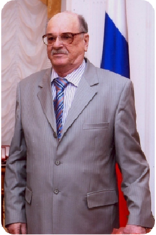
ВЛАДИМИР САМОЙЛОВИЧ ЦУКЕРМАН
Преподаватель, профессор, доктор филос. наук (1984), заслуженный работник культуры РФ (1993). С 1980 доцент кафедры философии и науч. коммунизма; с 1987 зав. кафедрой теории и истории культ.-просвет. работы; с 1993 зав., с 1998 профессор кафедры теории и социологии культуры.
Незауряден жизненный путь и характер этого уникального человека: голодное военное детство, ранний трудовой стаж подростка послевоенного времени, армейские будни, попадание под молот последнего витка репрессий (исключение из комсомола), сложный путь восстановления и оптимизм трудовой «оттепели» 60-х годов... Его «университетами» стал не только Уральский государственный университет (историко-филологический факультет которого окончил В.С. Цукерман в 1956 году), но и самые неожиданные маршруты профессиональных воплощений: экспедитор, формовщик, товаровед, инструктор ДОСААФ, учитель немецкого языка, учитель русского языка и литературы, истории и обществоведения школы рабочей молодежи г. Свердловска.
В 60-е годы происходит его приход в науку, встреча, плодотворное сотрудничество и человеческая дружба с выдающимся социологом культуры Л. Н. Коганом. В 1965 году Цукерман избран младшим научным сотрудником Уральского филиала Академии наук СССР. Тот «свердловский» период своей жизни он вспоминает как самое счастливое время, наполненное плодотворными дискуссиями с единомышленниками, исследованиями самых разнообразных сторон жизни и быта населения, конференциями, публикационной активностью.
Приход в 1971 году Владимира Самойловича Цукермана в Челябинский государственный институт культуры (1971–80 - зав. кафедрой культ.-просвет. работы, 1980–87-доцент кафедры философии и науч. коммунизма, 1987–93 зав. кафедрой теории и истории культ.-просвет. работы, 1993–98- зав. кафедрой теории и социологии культуры) сыграл, поистине, судьбоносную роль в судьбе вуза и гуманитарной науки области: позволил сформироваться «научному лицу» социологического и культурологического сообщества Южного Урала. Сегодняшние маститые ученые, видные деятели культуры и искусства Челябинской области, а когда-то – студенты института культуры – и спустя десятилетия сохраняют память о его лекциях и выступлениях, о его педагогическом мастерстве и жизненных уроках.
В 1997 году он стал основателем и первым Председателем диссертационного Совета по присуждению ученой степени кандидата культурологии (24.00.01 – теория и история культуры) на Южном Урале, подготовив целую плеяду исследователей данного направления в Челябинске – городе, не обладавшем гуманитарно-культурологическими традициями. Автор более 200 научных работ, В. С. Цукерман сумел отразить в своем творчестве безграничную палитру видов и форм культуры.
Под непосредственным руководством В. С. Цукермана была разработана модель специалиста - профессионала, исследователя социально-культурной сферы, сферы образования, науки, искусства. Социолог культуры предназначается для работы в правительственных и неправительственных организациях, учреждениях, объединениях и ассоциациях культуры, который профессионально способны осуществлять анализ социально-культурной ситуации на микро - и макро уровнях региона в целом и отдельного коллектива, и личности в частности. Эта сложная задача была решена коллективом кафедры под руководством ее первого заведующего.
В. С. Цукерман создатель научной школы на Южном Урале в области культуры и социологии культуры и искусства, доктор философских наук, профессор, заслуженный работник культуры РФ, действительный член Международной академии информатизации, действительный член Академии гуманитарных наук, почетный гражданин Челябинской области (награжденный знаками отличия «За заслуги перед Челябинской областью» и медалью к ордену «За заслуги перед Отечеством» II степени), почетный профессор и обладатель звания «Легенда» Челябинского государственного института культуры – не оставляют сомнений в весомости и многогранности его научно-педагогического вклада.
Некоторые научные труды
1. Кино и зритель: Моногр. М.: Искусство 1968. – 327 с. Соавт.: Л. Н. Коган, В. И. Волков
2. Цукерман В. С. Музыка и слушатель: Опыт социологического исследования / В. С. Цукерман. - Москва : Музыка, 1972. - 204 с.
3. Цукерман В.С. Социализм и художественное творчество масс: Моногр. М., 1983;
4. Цукерман В. С. Актуальные проблемы развития культуры : учеб. пособие к спецкурсу / В. С. Цукерман, С. С. Соковников ; Челяб. гос. ин-т культуры. - Челябинск : [б. и.], 1990. - 75 с.
5. Социально-культурное творчество масс в условиях перестройки [] : межвузовский сборник научных трудов / Челябинский государственный институт культуры ; редколлегия: В. В. Попов (составитель), В. С.Цукерман (ответственный редактор) [и др.]. - Челябинск : [б. и.], 1989. - 146 с.
6. Культурные запросы населенияи деятельность культурно-просветительных учреждений: межвузовский сборник научных трудов / Челябинский государственный институт искусства и культуры ; редколлегия: В. С. Цукерман (ответственный редактор) и др. - Челябинск : [б. и.], 1991. - 148 с.
7. Цукерман В. С. Народная художественная культура в условиях социализма : учеб. пособие / В. С. Цукерман ; Челяб. гос. ин-т культуры. - Челябинск : ЧГИК, 1989. - 135 с.
8. Цукерман В.С. Социокультурные предпочтения в Челябинской области. М., 1997.
- 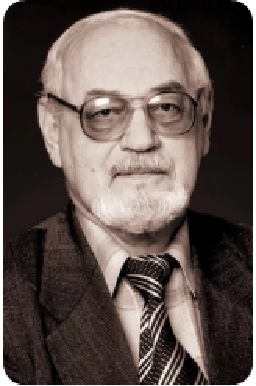
ВАЛЕРИЙ ТРОФИМОВИЧ ШАПКО
Исследователь проблем молодежи, доктор социологических наук (1997), профессор (1999).
Валерий Трофимович Шапко родился в 1940 г. в Нижнем Тагиле, в 1957 г. он окончил среднюю школу № 32 и поступил на заочное отделение Уральского политехнического института на электротехнический факультет. В ноябре 1957 г. поступил на работу в коксохимический цех НТМК электриком, где проработал до 1972 г. С отличием закончил заочное отделение исторического факультета УрГУ. В период с 1969 по 1973 г. В. Т. Шапко был преподавателем вечернего университета марксизма-ленинизма Нижнетагильского горкома КПСС, работал консультантом Дома политического просвещения. В 1973 г. В. Т. Шапко был избран по конкурсу на должность ассистента кафедры философии Нижнетагильского государственного педагогического института. В 1982 г. защитил диссертацию на соискание ученой степени кандидата философских наук. В 1986 г. ему было присвоено ученое звание доцента, а с 1988 по 2002 г. Валерий Трофимович работал заведующим кафедрой философских наук НТГСПИ.
В 1992 г. В. Т. Шапко защитил диссертацию на соискание ученой степени доктора социологических наук «Актуальная культура российской молодежи» в УрГУ (г. Екатеринбург). В 1999 г. ему было присвоено звание профессора кафедры социологии и политологии. В 2002 г. Валерий Трофимович переехал в Екатеринбург и стал профессором кафедры социологии и социальных технологий управления УГТУ-УПИ. До последних дней жизни, не прерывая связей с родным институтом, он работал внештатным профессором-консультантом на кафедре философских наук.
Высочайший уровень профессионализма профессора Шапко позволил ему инициировать создание в НТГСПА курсов молодых ученых (аспирантов и соискателей), где он проявил себя блестящим лектором и бессменным председателем экзаменационной комиссии по сдаче кандидатских экзаменов по философии, позднее – по истории и философии науки. Также под руководством В. Т. Шапко была организована разработка программ новых специальностей в НТГПИ-НТГСПА: учитель истории и обществознания, социально-политических дисциплин, социологии, политологии, культурологии.
Велика роль В. Шапко и в подготовке первых сборников общеинститутских «Ученых записок». Благодаря ему было положено начало проведения общеинститутских теоретических конференций по философским, социологическим и педагогическим проблемам. В. Т. Шапко был организатором научного сотрудничества с Уральским отделением Российской академии наук. Руководил социологическими исследованиями актуальных проблем культуры уральского региона: «Культурный портрет юного тагильчанина», «Социокультурное развитие большого Урала», «Социальные проблемы современного российского общества: региональный аспект», «Актуальные проблемы социологии и менеджмента» и др.
Валерий Трофимович внес большой личный вклад в установление прочных научных связей кафедры с ведущими научными учреждениями Урала, особенно с кафедрами философского и социологического факультетов УрГУ, ЧелГУ. Социологи кафедры принимали активнейшее участие в деятельности Уральской социологической ассоциации.
Личное обаяние, разносторонность интересов, интеллигентность, независимая жизненная позиция позволили Валерию Трофимовичу приобрести не только уважение коллег, но и любовь студентов всего вуза. Для того чтобы развить духовный и интеллектуальный потенциал молодежи, В. Т. Шапко совместно с Ю. Р. Вишневским организовал молодежный дискуссионный клуб «Я + Я = семья» и политический дискуссионный клуб, которые пользовались большой популярностью.
Некоторые научные труды
1. Коган, Л. Н., Вишневский, Ю. Р., Шапко, В. Т. Политическая культура развитого социализма. Свердловск, 1982
2. Кораблева, Г. Б., Шапко, В. Т. и др. Социальный портрет молодежи крупного индустриального центра. Екатеринбург – Н. Тагил, 1993
3. Кораблева, Г. Б., Шапко, В. Т. и др. Городской учитель — социально-профессиональный портрет. Екатеринбург – Н. Тагил, 1993
4. Вишневский, Ю. Р., Шапко, В. Т. Социология молодежи Екатеринбург – Н. Тагил, 1997
5. Вишневский, Ю. Р., Трынов, Д. В., Шапко, В. Т. Гражданская культура студентов. Тенденции и проблемы формирования // Социологические исследования. 2009, № 4. С. 108–117.
6. Талалаева Г. В., Вишневский Ю.Р., Шапко В. Т. Наркомания: аномальная форма адаптации молодежи : монография ; РАН, УрО, Институт экологии растений и животных [и др.]. - Екатеринбург, 2007. - 242